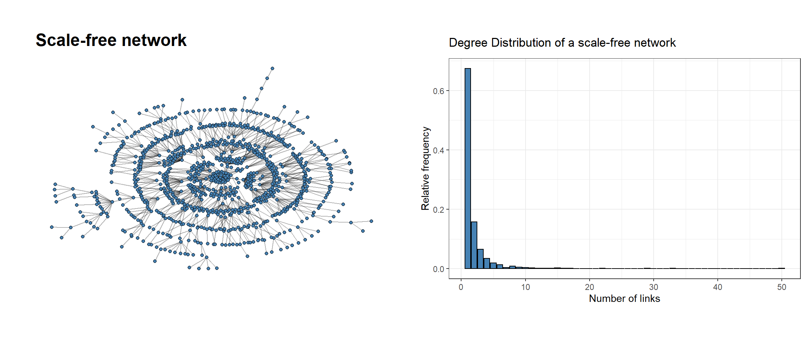
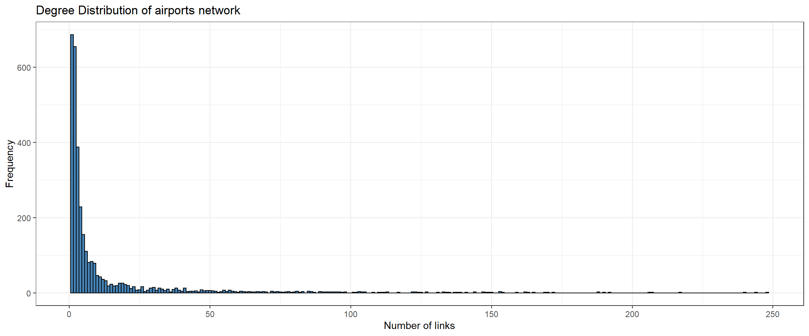
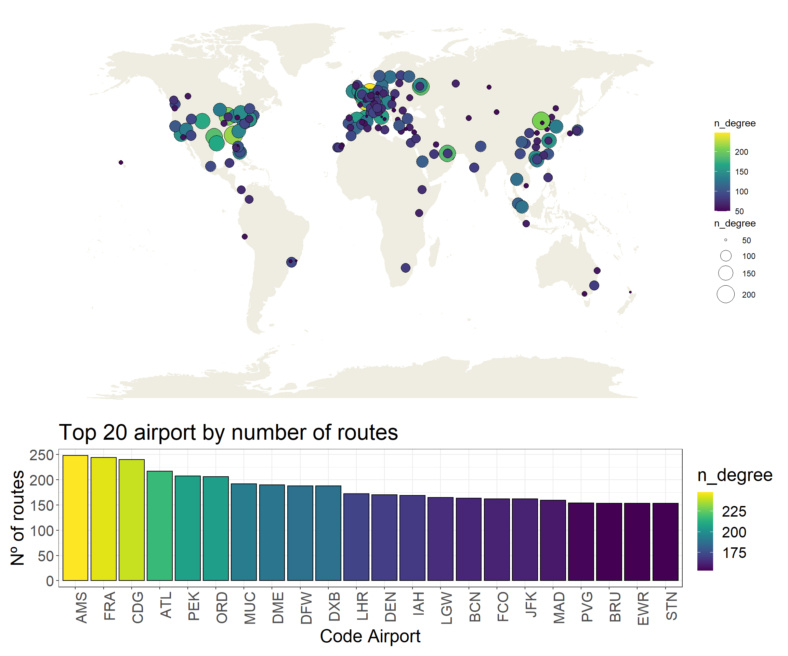
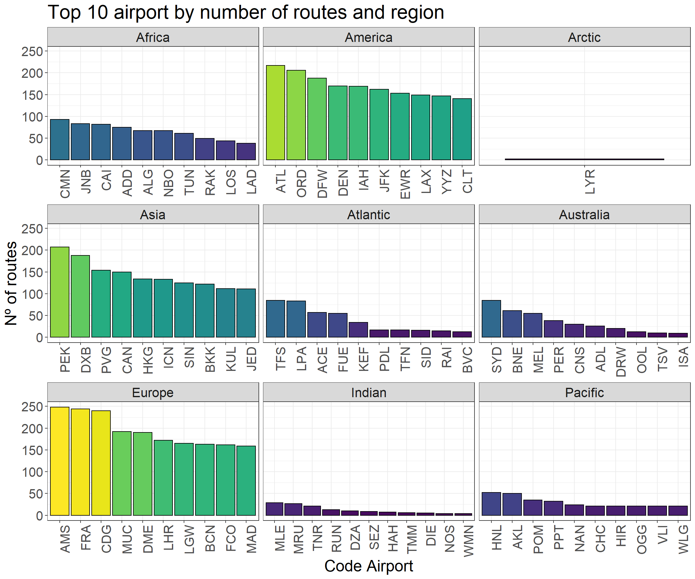
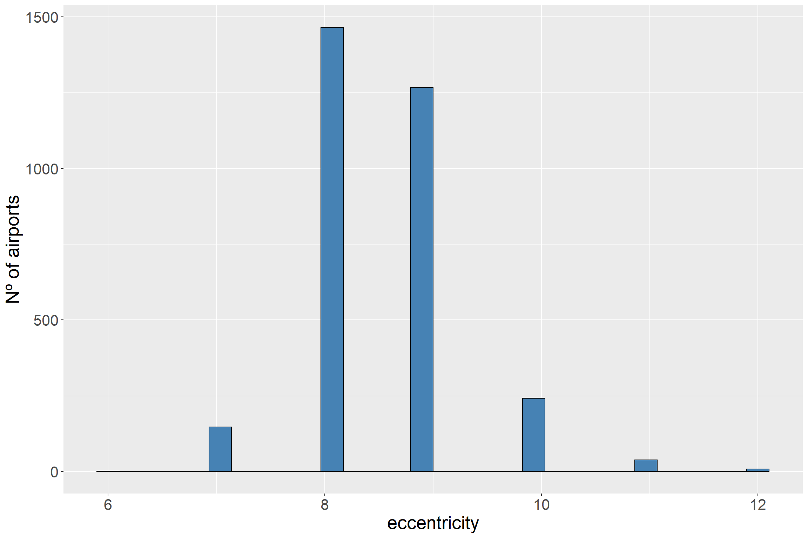
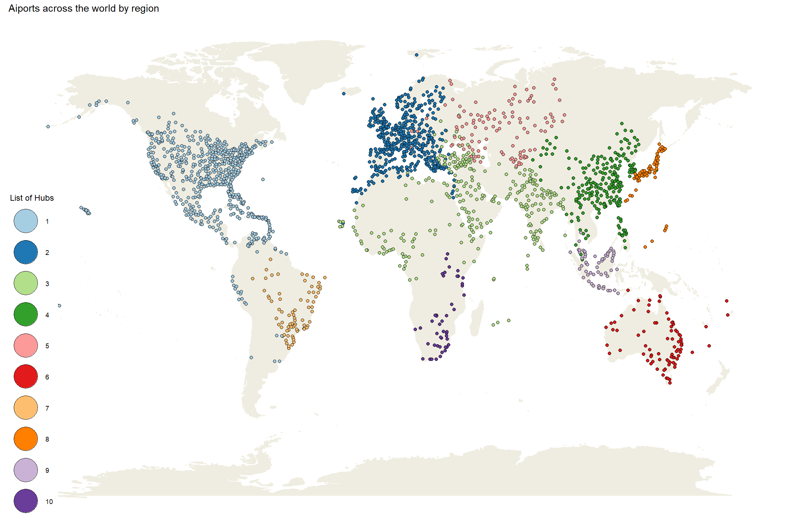
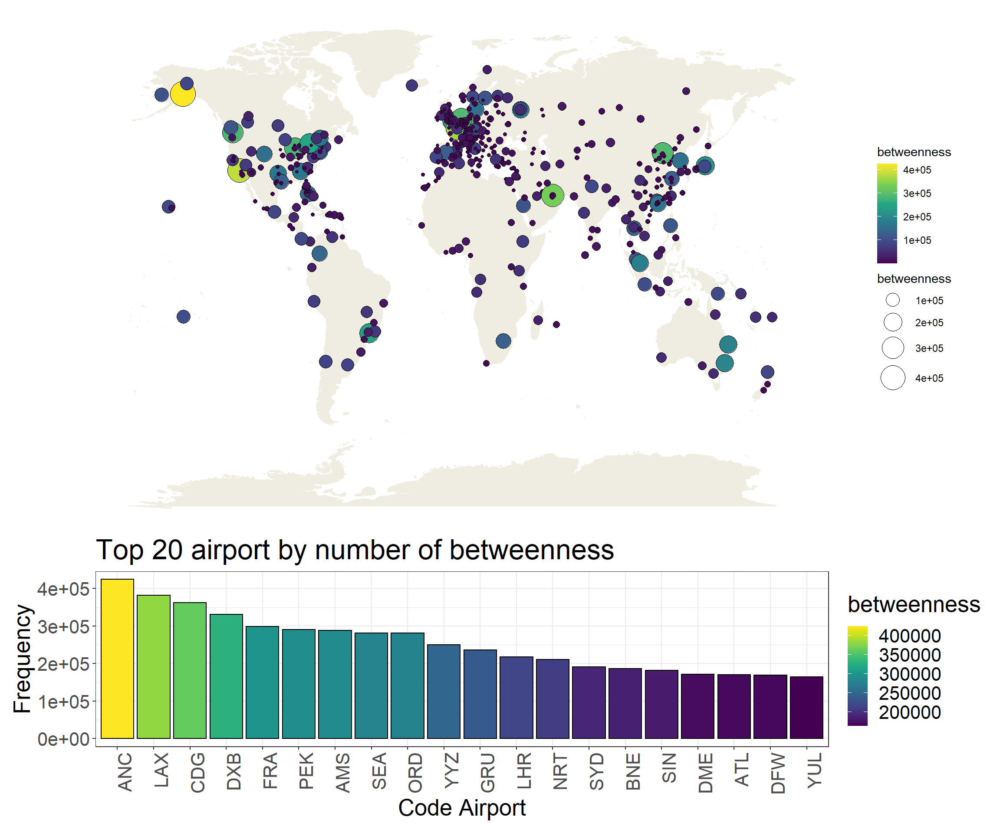
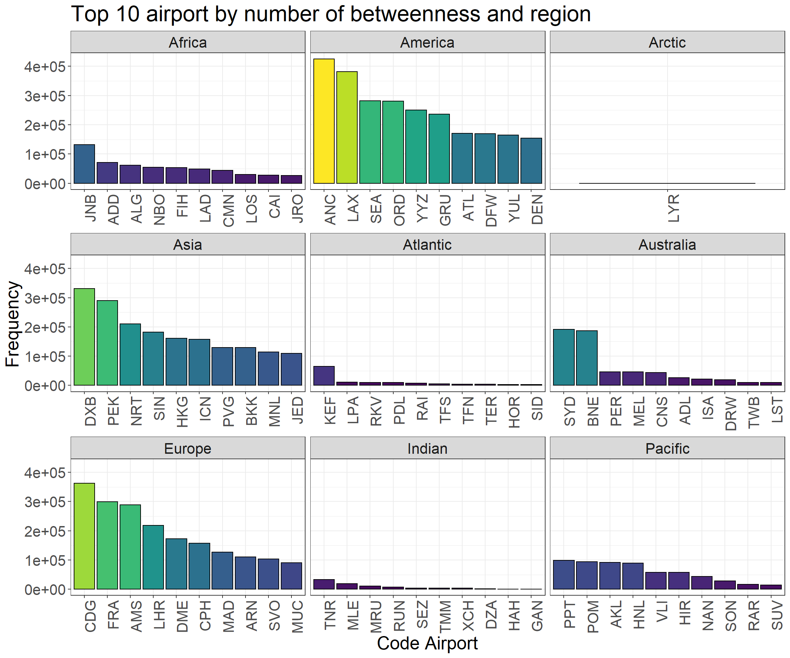
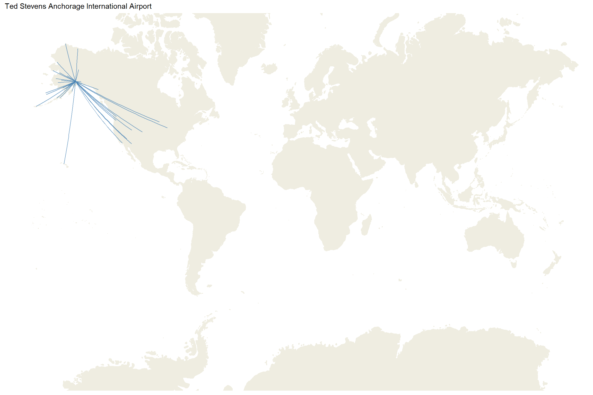
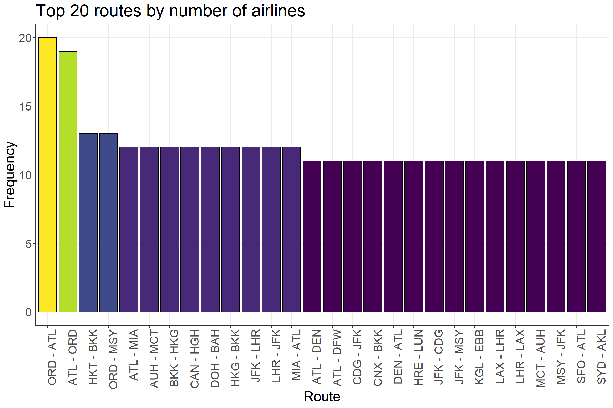

Recently, I started to read this free accessible book written by Albert-László Barabási. In the Chapter 4 of his book, it depicts the USA airport networks to represent scale-free networks. I was wondering if we can get a world picture, creating the same network but including the global routes using open data from internet.
1. What is a scale-free network?
Scale-free networks are characterized by a large number of nodes with low degree (number of links) and very few hubs with a high degree. If we represent the distribution of degrees of these nodes, it follows a power-law distribution. To illustrate this idea, let’s create a quick example:
# Load librarieslibrary(tidygraph) library(ggraph)library(igraph)library(stringr)library(tidyverse)library(patchwork)library(ggthemes)# 1. Example showing a scale-free networkscale_free_net <-play_barabasi_albert(n =1000, power =1)# 1.1 Scale-free networkp1 <-ggraph(scale_free_net, layout ='kk') +geom_edge_link(alpha =0.3) +geom_node_point(fill ='steelblue', color ='black', shape =21) +ggtitle('Scale-free network') +theme_graph()vector_values <-degree_distribution(scale_free_net)[-1] # Eliminate first element, it represents zero degree verticesdf <-data.frame(frequency = vector_values,degrees =seq(1, length(vector_values),1))# 1.2 Degree distributionp2 <-ggplot(df, aes(degrees, frequency)) +geom_col(fill ='steelblue', color ='black') +ggtitle('Degree Distribution of a scale-free network') +ylab('Relative frequency') +xlab('Number of links') +theme_bw()p1 + p2

Many real networks share this feature. For instance, if we take a look how internet is organized and calculate the number of links that every site has, we find that the most of websites (nodes) have a low number of links (edges) and very few will have a large number of links (e.g. Google, Facebook…). Other examples are social, co-authorship or protein-protein network.
We hope to see the same pattern through our airport’s network: very few airports have a large number of routes while the most will have few routes.
2. Data (airports and routes)
At the beginning, we talked about creating our own network of airlines routes. To achieve this, we download our data from Openflights whose have a lot of information about flights. We will just download data about airports (selecting: code, longitude and latitude) and routes (selecting: name, code source, code destination and continent location). Besides, we will clean those observations with NA’s values or wrong strings.
Important: Aiports will be the nodes of our network and the routes will conform the edges between the nodes.
To make possible the downstream analysis, we have to transform the observations of our dataframe into nodes and edges (tbl_graph object). We can do this thanks to the package ggraph. Once we do this, we will be able to visualise the network applying different algorithms layers and calculate topological parameters of the nodes that otherwise would not be possible.
For instance, we can choose the ‘mds’ layout (you can find many other layouts described here). This algorithm layout measures the shortest path between each node and display together those nodes which are closer in the network. Besides, we are going to calculate some scores per node and to make faster the algorithm, I will eliminate those airports whose number of routes are low.
FALSE Warning in betweenness(graph = graph, v = V(graph), directed = directed, :
FALSE 'nobigint' is deprecated since igraph 1.3 and will be removed in igraph 1.4
Besides, we plot the degree distribution of our network using ggplot2. For that, we convert our tbl_graph to a dataframe (the reverse step we did before) applying the function activation(nodes) and then as_tibble().
# Degree distributiondf_nodes <- df_graph %>%activate(nodes) %>%as_tibble()ggplot(df_nodes, aes(n_degree)) +geom_histogram(fill ='steelblue', color ='black', binwidth =1) +ggtitle('Degree Distribution of airports network') +ylab('Frequency') +xlab('Number of links') +theme_bw()

As we saw at the beginning, both networks follow a power-law distribution.
4. Where is my airport?
At first glance, let’s take a look at the distribution of the airports around the world based on their region:
worldmap <-borders("world", colour="#efede1", fill="#efede1") # Get airports by degreeggplot(df_airport, aes(long, lat)) + worldmap +geom_point(aes(fill = location), color ='black', shape =21) +theme_void() +guides(fill =guide_legend(override.aes =list(size =7))) +ggtitle(' Aiports across the world by region')
We can see the biggest hubs are influenced by the economical situation and the population density of the region.
What are the best connected airports?
p1 <-ggplot(df_nodes %>%filter(n_degree >=50), aes(long, lat)) + worldmap +geom_point(aes(size = n_degree, fill = n_degree), pch =21) +scale_fill_viridis_c() +theme_void() +scale_size_continuous(range =c(1,10))p2 <-ggplot(df_nodes %>%top_n(20, n_degree), aes(reorder(name, -n_degree), n_degree)) +geom_col(aes(fill = n_degree), color ='black') +scale_fill_viridis() +ggtitle('Top 20 airport by number of routes') +ylab('Nº of routes') +xlab('Code Airport') +theme_bw() +theme(axis.text.x =element_text(angle =90, hjust =1),text =element_text(size=20))p3 <-ggplot(df_nodes %>%group_by(location) %>%top_n(10, n_degree), aes(reorder(name, -n_degree), n_degree)) +geom_col(aes(fill = n_degree), color ='black') +scale_fill_viridis() +ggtitle('Top 10 airport by number of routes and region') +ylab('Nº of routes') +xlab('Code Airport') +facet_wrap(~ location, scales ='free_x') +theme_bw() +guides(fill =FALSE) +theme(axis.text.x =element_text(angle =90, hjust =1),text =element_text(size=20))
Warning: `guides(<scale> = FALSE)` is deprecated. Please use `guides(<scale> =
"none")` instead.
p1 + p2 +plot_layout(ncol =1, heights =c(3, 1))

p3

What is the longest path possible?
Can you guess how many steps would be required to travel the longest path possible between two airports? This number is called diameter and can be calculated easily:
The longest path is 12 steps. Not so long if we take into account the remote distance of some of the airports (Siberia, Greenland, Pacific regions…).
What is the shortest path between two airports?
We can select an airport and calculate the shortest path needed to reach another one. For instance, the Charles de Gaulle Airport (Paris) is one step from Adolfo Suárez Madrid–Barajas (Madrid), but what is the number of steps needed to reach the Hawai’s airport from Paris? Let’s calculate it:
shortest_paths(df_graph, 'CDG', 'HNL')$vpath[[1]]
+ 3/3209 vertices, named, from 74156b1:
[1] CDG ORD HNL
The shortest path from Paris to Honolulu is: Paris -> Chicago -> Honolulu.
Now, imagine that we calculate all the shortest paths between Paris and the rest of airports and we repeat it with every airport and calculate the average. This value is called: average shortest path and is average number of minimum connections required from any airport to any other airport.
The average shortesth path is 3.94, almost 4 steps on average to go from an airport to any other.
What is the longest distance possible from a specific airport?
We are in Paris again, and we want to go to the most distant airport possible (in steps). This value is called eccentricity and is specific for each airport. Let’s take a look at three of the most connected airports:
df_graph_eccen <- df_graph %>%activate(nodes) %>%mutate(eccentricity =node_eccentricity()) %>%as_tibble()df_graph_eccen %>%filter(name =='ATL'| name =='CDG'| name =='AMS') %>%select(name.y, eccentricity )
# A tibble: 3 × 2
name.y eccentricity
<chr> <dbl>
1 Hartsfield Jackson Atlanta International Airport 7
2 Charles de Gaulle International Airport 7
3 Amsterdam Airport Schiphol 7
We would need 7 steps to go from Paris to the most distant airport, the same value obtained with Atlanta and Amsterdam airports. This make sense as we have selected nodes with the highest nº of routes. But the value 7 is the lowest that we can get?
Let’s see the distribution:
# The filter(eccentricity > 2) eliminate those airports that are disconnected from the main network and have a eccentricity from 0 to 2ggplot(df_graph_eccen %>%filter(eccentricity >2), aes(eccentricity)) +geom_histogram(fill ='steelblue', color ='black') +ylab('Nº of airports') +theme(text =element_text(size=20))

As we see above, most of the airports are located between 8 and 9. Those airports with the highest number of routes have a value of 7. But there is an airport whose value is 6.
df_graph_eccen %>%filter(eccentricity ==6)
# A tibble: 1 × 11
name n_deg…¹ betwe…² commu…³ n_tri…⁴ clust name.y lat long locat…⁵ eccen…⁶
<chr> <dbl> <dbl> <int> <dbl> <dbl> <chr> <dbl> <dbl> <fct> <dbl>
1 YYZ 147 249941. 1 2061 0.192 Leste… 43.7 -79.6 America 6
# … with abbreviated variable names ¹n_degree, ²betweenness, ³community,
# ⁴n_triangles, ⁵location, ⁶eccentricity
Well, it is interesting that the airport with the lowest eccentricity is Lester B. Pearson International Airport located at Toronto. Its number of routes (n_degree) is not very high but has an important particularity. If we see the map, Canada is a country with a large number of airports sparse along the territory. While the majority of airports have to “spend” steps to reach those distant airport (mainly at the north of the territory), this airport is very close to them and at the same time is close to the rest of airports across the world (USA, Europe, China…)
Where are the hubs?
We can detect also the most relevant hubs (densely connected subgraphs) and display those airports that belongs to one of the top 10 hubs:
ggplot(df_nodes %>%filter(community <=10), aes(long, lat)) + worldmap +geom_point(aes(fill =as.factor(community)), color ='black', shape =21) +theme_void() +scale_fill_brewer(palette ='Paired') +guides(fill =guide_legend(override.aes =list(size =12))) +ggtitle(' Aiports across the world by region') +labs(fill="List of Hubs") +theme_map()

We have applied a walktrap community finding algorithm that uses random walks between the nodes and group those airports that are connected by short random walks.
If you take a look at the map, these hubs represent not only a group of airports densely connected but also political and economical hubs. For instance, a hub includes Ex-soviets states, another Europe, Canary Islands and some cities from Magreb.
In addition, we can classify the airports in 3 categories:
Core: Those aiports whose have the highest number of triangles (subgraph of 3 nodes and 3 edges). If an airport is located in many triangles, we consider it as a well connected airport.
Peryphery: Airports that are located in distant regions with few routes.
Bridge: Those airports that allow the communication between the airports that form the core and the periphery.
There are different ways to measure the connectivity of a node in a network. One of the most used is the betweenness centrality which is the sum of the shortest paths that pass through a node:
p1 <-ggplot(df_nodes %>%filter(n_degree >=20), aes(long, lat)) + worldmap +geom_point(aes(size = betweenness, fill = betweenness), pch =21) +scale_fill_viridis_c() +theme_void() +scale_size_continuous(range =c(1,10))p2 <-ggplot(df_nodes %>%top_n(20, betweenness), aes(reorder(name, -betweenness), betweenness)) +geom_col(aes(fill = betweenness), color ='black') +scale_fill_viridis() +ggtitle('Top 20 airport by number of betweenness') +ylab('Frequency') +xlab('Code Airport') +theme_bw() +theme(axis.text.x =element_text(angle =90, hjust =1),text =element_text(size=20))p3 <-ggplot(df_nodes %>%group_by(location) %>%top_n(10, betweenness), aes(reorder(name, -betweenness), betweenness)) +geom_col(aes(fill = betweenness), color ='black') +scale_fill_viridis() +ggtitle('Top 10 airport by number of betweenness and region') +ylab('Frequency') +xlab('Code Airport') +facet_wrap(~ location, scales ='free_x') +theme_bw() +guides(fill =FALSE) +theme(axis.text.x =element_text(angle =90, hjust =1),text =element_text(size=20))
Warning: `guides(<scale> = FALSE)` is deprecated. Please use `guides(<scale> =
"none")` instead.
p1 + p2 +plot_layout(ncol =1, heights =c(3, 1))

p3

As we see above, airports with with a high number of routes usually have a high betweenness. But we find an exception: the Ted Stevens Anchorage International Airport (ANL). Honestly, I did not expect this airport with the highest betweenness but if we take a look at the organization of the Alaska’s airports:
df_routes_def <- df_routes %>%left_join(df_airport, by =c('src'='code')) %>%rename(long_src = long, lat_src = lat) %>%left_join(df_airport, by =c('dest'='code')) %>%rename(long_dest = long, lat_dest = lat) %>%left_join(df_nodes, by =c('src'='name')) %>%select(-lat, -long)df_routes_anc <- df_routes_def %>%filter( dest =='ANC')ggplot(df_routes_anc, aes(long_src, lat_src)) + worldmap +coord_map(xlim=c(-180,180)) +geom_segment(aes(x = long_src, y = lat_src,xend = long_dest, yend = lat_dest),alpha =0.7, color ='steelblue') +scale_fill_viridis_c() +theme_map() +ggtitle('Ted Stevens Anchorage International Airport')

Crossing this airport is required to reach the rest of airports in Alaska. Therefore, this create a bottleneck where most of nodes have to cross this airport before reach the rest.
6. Routes by number of airlines
We can take a look at those routes whose have the largest number of airlines:
ggplot(df_routes %>%top_n(20, n), aes(reorder(paste(src, dest, sep =' - '), -n), n)) +geom_col(aes(fill = n), color ='black') +scale_fill_viridis() +ggtitle('Top 20 routes by number of airlines') +ylab('Frequency') +xlab('Route') +theme_bw() +guides(fill =FALSE) +theme(axis.text.x =element_text(angle =90, hjust =1),text =element_text(size=20))
FALSE Warning: `guides(<scale> = FALSE)` is deprecated. Please use `guides(<scale> =
FALSE "none")` instead.

7. Connections between Madrid and Dubai
We can display all the connections between Madrid and Dubai.
df_routes_dubai <- df_routes_def %>%filter( src =='DXB'| dest =='DXB')p1 <-ggplot(df_routes_dubai, aes(long_src, lat_src)) + worldmap +coord_map("gilbert", xlim=c(-180,180)) +geom_segment(aes(x = long_src, y = lat_src,xend = long_dest, yend = lat_dest),alpha =0.3, color ='steelblue') +scale_fill_viridis_c() +theme_map() +ggtitle('Dubai International Airport connections') p2 <-ggplot(df_routes_dubai %>%filter(src =='DXB') %>%top_n(10, n) , aes(reorder(paste(src, dest, sep =' - '), -n), n)) +geom_col(aes(fill = n), color ='black') +scale_fill_viridis() +ggtitle('Top 10 routes by number of airlines') +ylab('Frequency') +xlab('Route') +theme_bw() +guides(fill =FALSE) +theme(axis.text.x =element_text(angle =90, hjust =1),text =element_text(size=20))
FALSE Warning: `guides(<scale> = FALSE)` is deprecated. Please use `guides(<scale> =
FALSE "none")` instead.
The relevance of an airport in the network can be assessed through different metrics: nº of routes, nº of triangles, clustering, betweenness, eccentricity or shortest path. At the same time, the identification of groups of airports, we have clustered airports by continent, random walks algorithm, or using a blend of centrality measures filtering the nodes in three groups (core, bridge, peripherial).
In conclusion, network science allows us to improve our knowledge about data that can be converted into a network, through the use of multiple approaches.
Final notes
To simplify this post, I have not included the direction of the edges neither the real distance between airports.
A very interesting point is the analysis of the resilence: what would happen if we delete a specific airport from the network? Would the impact be equal across the aiports?